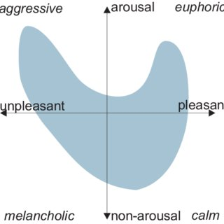
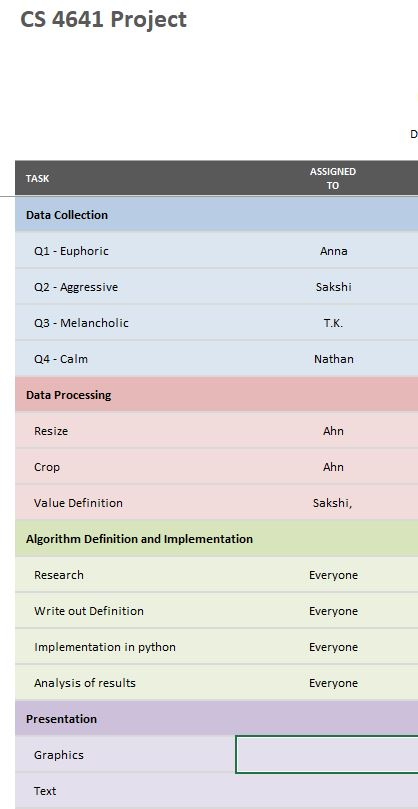

Our team aims to predict the mood associated with a given image by using a supervised learning approach. Digital images play an important role in modern day society and they are very important in portraying moods and expressions.
The main issue we wish to address is how to identify certain overarching moods based off hue, saturation, and value (hsv) as well as other factors. Being able to classify moods would be beneficial for creators, marketing agencies, and social media platforms for categorizing the emotional response that an image invokes.
We plan to approach this problem using supervised learning. Static images (still life) will be compiled from open-source image databases such as Wikimedia Commons and Flickr. The images will then be uniformly cropped and resized and assigned hsv values on a per pixel basis. Our program will then analyze the image and output a coordinate corresponding to a mood on the Reisenzeim mood model.

